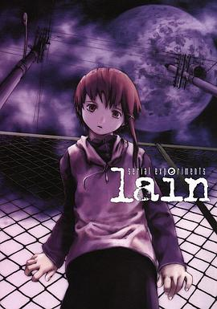

2022年7月
广播发布后不可编辑，所以每条都是那一刻的原话。
2022-07-31 07:14:10
读过 妹妹人生 〈下〉 ★★★★★
结尾有些潦草。
2022-07-30 16:00:19
想读 万寿寺
2022-07-30 15:56:42
 看过 四叠半神话大系 / 四畳半神話大系 ★★★★★
看过 四叠半神话大系 / 四畳半神話大系 ★★★★★
好快的节奏。（我永远喜欢森见！）
2022-07-29 20:46:40
在看 四叠半神话大系 / 四畳半神話大系 ★★★★★
好快的节奏。
2022-07-29 20:44:35
 想读 四叠半神话大系
想读 四叠半神话大系
2022-07-29 20:19:14
在读 欧也妮·葛朗台 ★★★★★
2022-07-29 17:24:50
 看过 火星救援 / The Martian ★★★★★
看过 火星救援 / The Martian ★★★★★
很好的爽歪歪电影。
2022-07-29 12:24:44
在读 妹妹人生 〈下〉 ★★★★☆
2022-07-29 12:24:22
读过 妹妹人生 〈上〉 ★★★★★
好有感觉。
2022-07-28 21:02:34
 看过 辛德勒的名单 / Schindler’s List ★★★★★
看过 辛德勒的名单 / Schindler’s List ★★★★★
他也许是在忏悔。
2022-07-28 16:37:58
收藏广播到豆列 殷丹 小米粥 说：
2022-07-28 14:01:52
 看过 更衣人偶坠入爱河 / その着せ替え人形は恋をする ★★★★★
看过 更衣人偶坠入爱河 / その着せ替え人形は恋をする ★★★★★
有趣。
2022-07-26 18:09:25
 看过 少年派的奇幻漂流 / Life of Pi ★★★★★
看过 少年派的奇幻漂流 / Life of Pi ★★★★★
突然就有了深意，其中有几段是真的很平静。
2022-07-26 15:42:48
 看过 疯狂的麦克斯4：狂暴之路 / Mad Max: Fury Road ★★★★★
看过 疯狂的麦克斯4：狂暴之路 / Mad Max: Fury Road ★★★★★
好爽。
2022-07-26 10:21:58
 听过 エヴァンゲリオン THE BIRTHDAY OF Rei AYANAMI ★★★★★
听过 エヴァンゲリオン THE BIRTHDAY OF Rei AYANAMI ★★★★★
2022-07-25 21:52:07
 看过 无耻混蛋 / Inglourious Basterds ★★★★★
看过 无耻混蛋 / Inglourious Basterds ★★★★★
好好。说不上来的痛快，结尾有些潦草。
2022-07-25 16:29:32
 看过 大卫·戈尔的一生 / The Life of David Gale ★★★★★
看过 大卫·戈尔的一生 / The Life of David Gale ★★★★★
也只有死亡能够制止死亡。
2022-07-24 20:24:29
 想看 青之炎 / 青の炎
想看 青之炎 / 青の炎
2022-07-24 19:10:51
在看 莉可丽丝 / リコリス・リコイル ★★★★★
好喜欢好喜欢！
2022-07-24 18:05:20
 看过 变相怪杰 / The Mask ★★★★☆
看过 变相怪杰 / The Mask ★★★★☆
2022-07-23 22:09:09
 看过 狮子王 / The Lion King ★★★★★
看过 狮子王 / The Lion King ★★★★★
完成度很高。
2022-07-23 17:05:40
 看过 千子 / センコロール ★★★★☆
看过 千子 / センコロール ★★★★☆
有趣的创意。
2022-07-23 16:27:45
 看过 绿皮书 / Green Book ★★★★★
看过 绿皮书 / Green Book ★★★★★
不要携带偏见。
2022-07-22 19:39:10

2022-07-22 17:28:54
 看过 头号玩家 / Ready Player One ★★★★★
看过 头号玩家 / Ready Player One ★★★★★
够了。
2022-07-22 15:18:20
 看过 茶馆 ★★★★★
看过 茶馆 ★★★★★
戏剧。
2022-07-21 23:46:17
 想看 蓝风筝
想看 蓝风筝
2022-07-19 21:58:48
 在看 化物语 / 化物語 ★★★★★
在看 化物语 / 化物語 ★★★★★
接触。
2022-07-19 21:56:49
 看过 大卫·科波菲尔 / David Copperfield ★★★★☆
看过 大卫·科波菲尔 / David Copperfield ★★★★☆
2022-07-18 22:06:17
 想读 受戒
想读 受戒
2022-07-18 22:03:32
在读 乱离中的歌吟：郁达夫自述（百年中国记忆.文学家自述） ★★★★☆
先了解一下作者。
2022-07-18 21:59:48
 在读 小王子 ★★★★★
在读 小王子 ★★★★★
我也想要一只绵羊。
2022-07-18 21:57:38
读过 茶，汤和好天气 ★★★★★
挺好。
2022-07-18 21:57:19
 看过 间谍过家家 第一季 / SPY×FAMILY ★★★★★
看过 间谍过家家 第一季 / SPY×FAMILY ★★★★★
哇，超棒！
2022-07-18 13:03:26
看过 莉可丽丝 / リコリス・リコイル ★★★★★
好喜欢好喜欢！
2022-07-18 11:24:46
在看 大卫·科波菲尔 / David Copperfield ★★★★☆
2022-07-18 11:22:46
想看 大卫·戈尔的一生 / The Life of David Gale
2022-07-15 21:37:00
想读 局外人
2022-07-15 16:50:36
 看过 飞越疯人院 / One Flew Over the Cuckoo’s Nest ★★★★★
看过 飞越疯人院 / One Flew Over the Cuckoo’s Nest ★★★★★
结尾即高潮。
2022-07-14 17:25:04
 看过 蝙蝠侠 / Batman ★★★★☆
看过 蝙蝠侠 / Batman ★★★★☆
好看。
2022-07-14 16:45:51
 想看 17.3 关于性 / 17.3 about a sex
想看 17.3 关于性 / 17.3 about a sex
2022-07-14 12:23:48
想看 千子 / センコロール
2022-07-12 12:23:24
 想读 一间只属于自己的房间
想读 一间只属于自己的房间
2022-07-12 11:35:48
看过 卷土重来 / The Comeback ★★★★☆
2022-07-12 11:31:58
 在听 之乎者也 ★★★★★
在听 之乎者也 ★★★★★
2022-07-10 22:41:51

2022-07-10 12:16:48
2022-07-10 11:36:23
在读 茶，汤和好天气 ★★★★★
2022-07-08 21:34:27
看过 假面骑士巫骑 / 仮面ライダーウィザード ★★★★★
魔法与骑士的碰撞。
2022-07-08 21:34:11
看过 假面骑士W / 仮面ライダーW ★★★★★
太好看了。
2022-07-08 15:23:46
看过 死亡诗社 / Dead Poets Society ★★★★★
人们不是无能为力的，只是他们不懂。
2022-07-07 20:24:16
读过 朝闻道 ★★★★★
好喜欢《诗云》。
2022-07-07 20:17:07
看过 爱在午夜降临前 / Before Midnight ★★★★★
也许这才是生活。
2022-07-06 12:46:28
 想读 我与地坛
想读 我与地坛
2022-07-05 13:19:47
读过 长日将尽 ★★★★★
说话絮絮叨叨。可是在本恩太太回头问他的时候，我还是差点没忍住。
2022-07-04 11:26:09
在读 1Q84 BOOK1 ★★★★★
很好的开头。
2022-07-03 12:40:14
想读 遇到百分之百的女孩
2022-07-01 21:08:01
看过 爱在日落黄昏时 / Before Sunset ★★★★★
特别的，塞纳河畔与你的相遇。
2022-07-01 19:25:16
看过 红辣椒 / パプリカ ★★★★★
真的好像一场梦。
2022-07-01 14:09:42
 听过 Show Me How ★★★★★
听过 Show Me How ★★★★★
2022-07-01 14:03:03
 看过 绿巨人浩克 / Hulk ★★★☆☆
看过 绿巨人浩克 / Hulk ★★★☆☆
2022-07-01 13:58:15
看过 饮食男女 / 飲食男女 ★★★★★
人生百态。